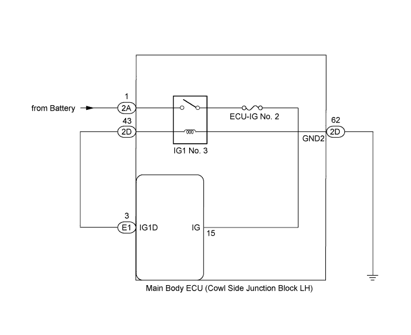
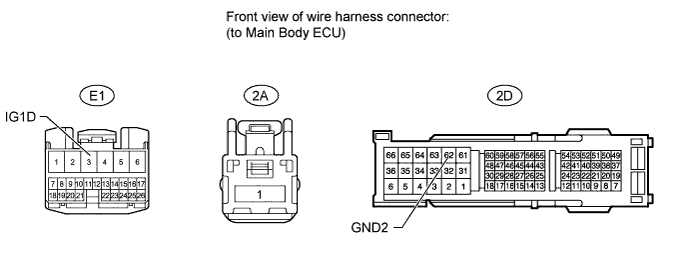

DTC B2272 Ignition 1 Monitor Malfunction |
| DTC Code | Detection Condition | Trouble Area |
| B2272 | The IG1 No. 3 relay actuation circuit inside the main body ECU or other related circuit is malfunctioning. |
|

| 1.READ VALUE USING INTELLIGENT TESTER (IG1 RELAY MONITOR (OUTSIDE)) |
Use the Data List to check if the IG1 No. 3 relay is functioning properly.
| Tester Display | Measurement Item/Range | Normal Condition | Diagnostic Note |
| IG1 Relay Monitor (Outside) | IG1 No. 3 relay outer relay monitor/ON or OFF | ON: Engine switch on (IG) OFF: Engine switch off | - |
|
| ||||
| OK | |
| 2.CHECK WHETHER DTC OUTPUT RECURS |
Clear the DTCs (Click here).
Turn the engine switch on (IG), wait at least 10 seconds, and check whether DTC B2272 is output.
| Result | Proceed to |
| No DTC output | A |
| DTC B2272 output | B |
|
| ||||
| A | ||
| ||
| 3.CHECK HARNESS AND CONNECTOR (MAIN BODY ECU - BATTERY AND BODY GROUND) |

Disconnect the E1, 2A and 2D main body ECU connectors.
Measure the voltage and resistance according to the value(s) in the table below.
| Tester Connection | Condition | Specified Condition |
| 2A-1 - Body ground | Always | 11 to 14 V |
| Tester Connection | Condition | Specified Condition |
| E1-3 (IG1D) - 2D-43 | Always | Below 1 Ω |
| 2D-62 (GND2) - Body ground | Always | Below 1 Ω |
| E1-3 (IG1D) or 2D-43 - Body ground | Always | 10 kΩ or higher |
|
| ||||
| OK | ||
| ||